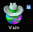
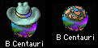
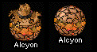
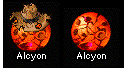
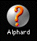
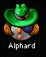
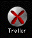

Exploring Planets: Temperature & Gravity
At some stage you'll want to leave your home planet and spend some effort exploring the nearby stars looking for other habitable planets. Each planet has two important characteristics: Temperature and Gravity.
Temperature represents everything you can change about a star system, from the atmospheric content to the planetary ecology. Your home planet is 72°. When you spend money on Terraforming a new planet, its temperature will get closer to 72°. When the temperature reaches 72°, the planet is as good as it's going to get, and you can't spend more on Terraforming.
Gravity represents everything you can't change about a star system, from the output of the sun to the tidal forces of the moons. Some places just plain aren't as habitable as others. Your home planet is 1.00 G, and the closer a planet is to that, the better off the population will be. Planets much bigger than 2.5 G or smaller than 0.4 G will never make a profit and aren't worth colonizing for the long term. Of course, metal being the scarce commodity it is, you shouldn't balk at colonizing an inhospitable planet long enough to take all its metal.
 How to Colonize Planets
How to Colonize Planets
At some point or another you'll find a juicy planet that you'd like to keep. It will be something like 1.46 G and 198°. It will have 9,487 Metal, and you just won't be able to resist.
The first step is to build a Colony Ship of some sort, and send it there. (If your starting position is "Thriving" or "Abundant," one colony ship will already be built for you.) When it arrives, you'll get a message letting you know that you've colonized a new planet. It'll say something like, "You've just colonized Sol."
You'll notice at this point that in your Budget Window a new slot has appeared with the name of the new star. This is where you allocate money to Terraforming and Mining for this planet.
It takes a while for a planet to become profitable, even if it's a great planet. For decades, you'll pump money in, terraforming and mining the planet. You'll watch the population grow from a tiny handful into a booming, profitable economy that contributes to your Galactic Empire. The worse a planet is to start with, the longer it will take you to get it to make a profit.
The more money you spend on Terraforming a planet, the faster it will grow. Unfortunately, even when the temperature is a perfect 72°, you probably still won't have enough people there to support the whole planet. Be patient, the population will grow. Mining and shipbuilding don't have any effect on how quickly the population grows.
It costs a base of $7,500 to support a planet. Since your home planet only produces about $30,000 per turn, you only have enough money to colonize four planets at a time. At most. You'll probably want to colonize only one, at least until it rounds the corner into profitability. Otherwise, you end up spending all your money just keeping your people alive, only leaving you with a little to improve the planets, build ships, and research new technology.
It's good to have lots of colonized planets. The more profitable planets you have, the more money you make. The more money you make, the more you can spend on research. The higher your technology, the less likely you are to be overrun by an enemy -- assuming you have built ships with that higher technology. Also, if you have lots of planets you can afford to have one or two trampled by enemy ships.
You'll notice that all your colonies look like good guys. That is, they aren't wearing a mask, or dark sunglasses, or mohawks, or earrings. It's simple: You get to wear the white hat. Of course, all the other players think they're the good guys, too.
How to Strip-Mine a Planet
Sometimes you'll find yourself short of metal. Now is a good time to colonize a planet that you know darned well won't ever make a profit, no matter how much you terraform it and how long you wait. Maybe it's 3.5 G, or even worse.Colonize the planet, but adjust the planet's spending so that you spend no money on Terraforming. Spend it all on Mining. When you've taken as much metal as you want to from the planet, " Evacuate " it. Any Satellites you've built there will stay, but your colonists will leave.
Sometimes you may want to mine a planet just to keep an enemy from getting its metal.
How to Kill Enemy Planets
Send a fleet to an enemy colony. Once your fleet destroys the enemy ships and satellites, it will go on to pound on the planet itself, killing off the population in great droves. The planet itself may put up a fierce resistance, but this is likely to be only enough to defend against exploratory forces. Against your invasion fleet, odds are good that the planet's population will be completely wiped out. The enemy will no longer own the planet. You'll be free to colonize it, or do whatever else you want. Of course, the enemy may be annoyed, and attempt to recapture it, so caution is a good idea.
Different Planet Pictures
Different kinds of planets will each have a unique look. This section is a glossary of planet pictures.
A Colonized, Profitable Planet

This is a planet where your population has grown to the point where it can support itself. It can even supply money for your interstellar effort. Your home planet is like this.
A Potentially Profitable Planet

A planet in this category, given enough time and effort, could be profitable someday. To make it profitable, you'll have to terraform it until it's close to 72° and give the population time to grow.
A Semi-habitable Planet

A planet between 0.4 and 0.5 G, or between 2.0 and 2.5 G falls into this category. Eventually, this type of planet can be made profitable. Still, it's never going to be very profitable, so often it's best to mine this kind of planet and leave it.
An Inhospitable Planet
A Planet with gravity greater than 2.5 G or less than 0.4 G will be almost impossible to make profitable. Still, on rare occasions it can be a good idea to keep such a planet around for strategic reasons. The rest of the time, just mine all the Metal from it and " Evacuate " it -- don't bother to terraform it.
A Strip-Mined, Inhospitable Planet

This kind of planet not only won't ever turn a profit, it doesn't even have any metal you can mine. Yuck! Unless it has some strategic importance or you're afraid there's an enemy base there, just leave this junk alone.
An Unexplored Planet

This is a planet that you've never been to.
A Soon-to-be-explored Planet
If you send a fleet to an unexplored planet, the question mark will turn into an exclamation point, letting you know that you'll know more soon.
An Enemy Planet

Any planet where you lose a battle becomes an enemy planet. A planet will stay an enemy until you send another fleet there and win a battle. In fact, you might send a fleet to an enemy planet and find no one, or a different enemy, there. All the information you have about planets is based on the last time you were there. If it's been a long time since you were at a given planet, your information about that planet may be out of date.
Enemy planets look like a variety of bad guys. Each enemy player will have his own look, so you can tell who you're fighting where.
An Ally Planet
When you ally with another player, his icon on the Star Map will change to reflect this. His icon will become a lighter color, and he'll get a "halo" over his head, since he's a good guy, now.
A Battle Planet

Occasionally, you'll send a fleet to a star you've never been to and find an enemy fleet similar in strength to yours. If you and the enemy are both killed, you'll get this planet picture. It says you haven't explored the planet yet, but you know bad guys are near. You'll also see this planet if you notice a large battle from two other players fighting at a planet you haven't yet explored.
Satellites
If you put satellites up at any planet, that planet will have a circle around it in the star map to let you know that it's defended.
Fleets
If you have a fleet at any planet, small icons representing the fleet and the type of ships in the fleet will appear starting in the upper right corner of the planet and going down. We know, the dots may look like moons, but don't let that fool you. Click on the fleet "dots" to select a fleet. Click and drag to send a fleet to a different planet.
Allied Fleets
If you see friendly fleets parked at one of your planets, they'll have a fleet symbol there too. And no, you can't tell your allies' fleets where to go by clicking and dragging them.